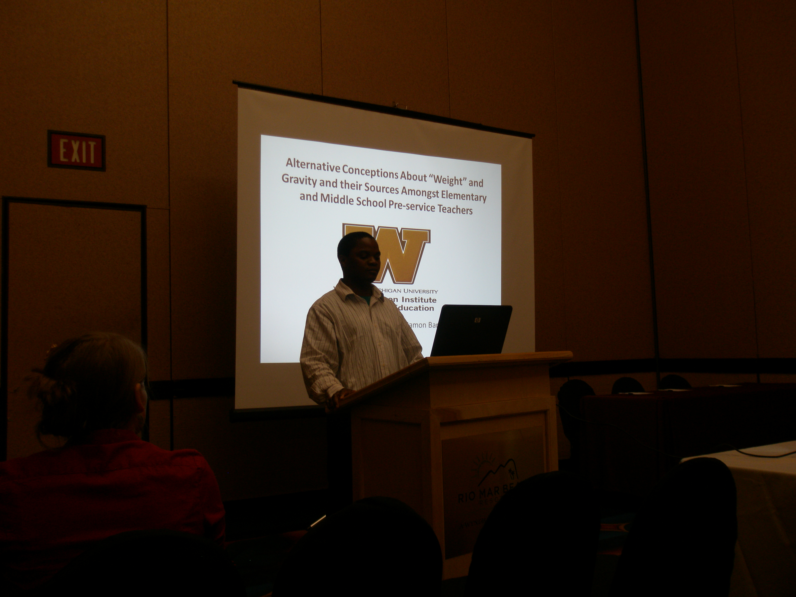

Rex Taibu, David Rudge and David Schuster The Mallinson Institute for Science Education
|
|
| Abstract: Two distinct physical constructs are involved in the discussion of 'weight': the gravitational and the scale force. Different experts name these constructs differently leading to learning and teaching difficulties. The problem is also that the two constructs are given the same name, and the distinction is not made clear to students, which causes problems in accelerating reference frames (e.g., elevators and orbiting spaceships). Analysis of 13 introductory physics textbooks indicates that the debate regarding 'weight' is not explicitly stated in textbooks, the two physical constructs are not clearly presented, and semantic issues are prevalent. A new approach to teaching 'weight' is proposed. | |
| GRANTS | |
|
2013 |
Graduate Student Travel Grant, Western Michigan University ($700) |
| PUBLICATIONS | |
| 2015 | Taibu, R., Rudge, D. & Schuster, D. Textbook Presentations of Weight: Conceptual Difficulties and Language Ambiguities. Physical Review Special Topics: Physics Education Research 11(1): 010117-1-20. |
| 2013 | The Variation of Hydrogen Concentration in Ni/MgH Thin Film With Temperature. LAP Lambert Academic Publishing: Kšln, Germany. ISBN 978-3-659-31600-5. -edited version of Masters Thesis solicited by publisher |
| 2011 | Dissanayake, A., AlFaify, S., Garratt, E., Nandasiri, M.I., Taibu, R., Tecos, Mhamdan, G.N. and Kayani, A. Measurement Of Hydrogen Capacities And Stability In Thin Films Of AlH Deposited By Magnetron Sputtering, AIP Conference Proceedings, 1336: 189-192. |
| PRESENTATIONS | |
| Taibu, R., Schuster, D. and Rudge, D. "Teaching Weight, Weightlessness and Freefall: Conceptual and Language Issues" Michigan Academy of Science, Arts and Letters Conference, Oakland University, Rochester, MI, February 28, 2014 talk | |
| Taibu, R., Rudge, D. & Schuster, D. "Textbook Presentations of Weight: Conceptual and Associated Terminological Ambiguities" 2013 AAPT Winter Meeting, Florida, MI, January 06, 2014 | |
| Taibu, R., Rudge, D. & Schuster, D. "Textbooks' Presentation of the Ambiguous Concept of 'Weight'" Early Research Requirement Presentation Western Michigan University, Kalamazoo, MI, June 17, 2013- talk | |
| Taibu, R., Rudge, D. & Schuster, D. "Textbooks' Presentation of the Ambiguous Concept of 'Weight'" 2013 Spring Meeting of the Michigan Section of the American Association of Physics Teachers (AAPT) Henry Ford Commmunity College, Dearborn, MI, April 20, 2013- talk | |
| Schuster, D. Taibu, R., Plybour, C., Mamudi, W. & Adams, B. "Observational approach to the concept of image: the PCK involved" 2013 Spring Meeting of the Michigan Section of the American Association of Physics Teachers (AAPT) Henry Ford Community College, Dearborn, MI, April 20, 2013- talk | |
| Taibu, R., Mataka, L. & Barthelemy, R. "Elementary Pre-Service Teacher's Sources of Existing Alternative Conceptions about Weight and Gravity" Annual International Conference of the National Association for Research in Science Teaching (NARST) Rio Grande, Puerto Rico, April 7, 2013- talk | |
Last updated on 15 Oct 2015.